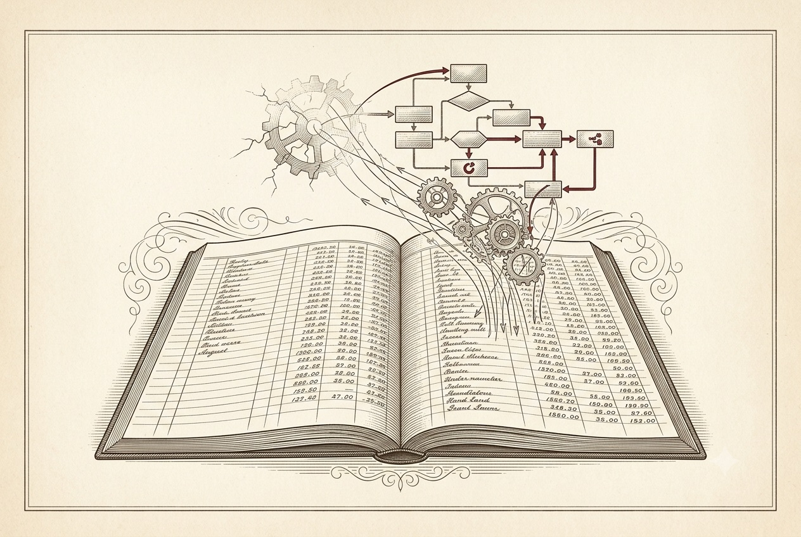

A BookBank Field Guide
Durable Execution
Workflows that survive anything — crashes, deploys, partitions — because their progress is written down, not merely remembered.

A refined frontispiece illustration in the style of a classic printed book's engraved plate, warm aged-paper palette (cream, sepia, a single restrained oxblood-red accent). A large open ledger book with ruled, hand-entered rows; from its pages, fine engraved lines rise and reassemble into a delicate machine of interlocking gears and small workflow boxes hovering above the book — the machine rebuilt from the written record. A faint cracked gear at the edge suggests a crash, with lines already re-forming it. Cross-hatch engraving, restrained, generous margins, no readable text baked in. ~1350×900px, 3:2 landscape, subject centred with safe margins.
Generate this with your image agent, then drop the file here.
In the voice of Jim Gray — begin from failure, keep a back-of-the-envelope number close to hand, and always say plainly what a mechanism promises and what it does not. Ledgers, bank accounts, and airline reservations throughout; System R and ARIES never far away.
What we'll build, and why
Eight short chapters. Each mechanism earns its place by surviving one specific way the world breaks.
- 01The Failure Modelcrash, partition, lying disk
- 02The Log Never Lieswrite it down first
- 03Checkpointing & Replayrebuild from the record
- 04Idempotencythe exactly-once illusion
- 05Durable Timerssleeping for a month
- 06Sagas & Compensationundoing what committed
- 07The EnginesTemporal, Oban, Reactor
- 08What Is Actually Promisedthe honest accounting
- ★Cheatsheetthe whole ledger on one page
You have already built workflow tooling — jobs on Oban, steps on Reactor — and it mostly works. This book is about the floor beneath that: durable execution, the old and stubborn art of writing a program's progress down so faithfully that the program can die in the middle and wake up exactly where it fell. Nothing here is magic. We will take the lid off and, for every part, ask the only two questions a transaction person ever asks: which failure does this survive, and what precisely does it promise? Get those two and the whole subject stops being folklore.